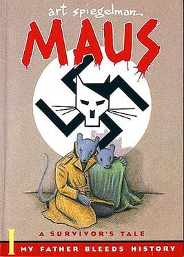
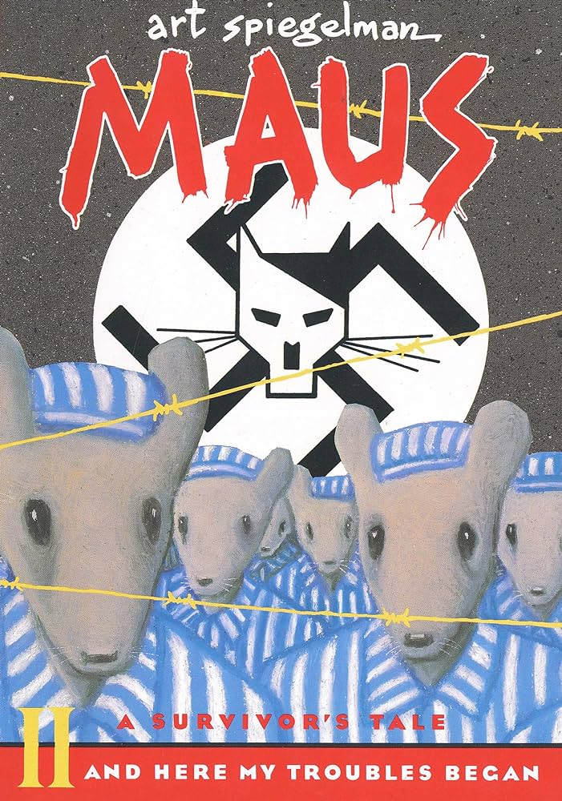

Maus, often published as Maus: A Survivor's Tale, is a graphic novel by American cartoonist Art Spiegelman, serialized from 1980 to 1991. It depicts Spiegelman interviewing his father about his experiences as a Polish Jew and Holocaust survivor. The work employs postmodern techniques, and represents Jews as mice and other Germans and Poles as cats and pigs respectively. Critics have classified Maus as memoir, biography, history, fiction, autobiography, or a mix of genres. In 1992 it became the first graphic novel to win a Pulitzer Prize.
 In the frame-tale timeline in the narrative present that begins in 1978 in New York City, Spiegelman talks with his father Vladek about his Holocaust experiences, gathering material and information for the Maus project he is preparing. In the narrative past, Spiegelman depicts these experiences, from the years leading up to World War II to his parents' liberation from the Nazi concentration camps. Much of the story revolves around Spiegelman's troubled relationship with his father and the absence of his mother, who died by suicide when Spiegelman was 20. Her grief-stricken husband destroyed her written accounts of Auschwitz. The book uses a minimalist drawing style and displays innovation in its pacing, structure, and page layouts.
A three-page strip also called "Maus" that he made in 1972 gave Spiegelman an opportunity to interview his father about his life during World War II. The recorded interviews became the basis for the book, which Spiegelman began in 1978. He serialized Maus from 1980 until 1991 as an insert in Raw, an avant-garde comics and graphics magazine published by Spiegelman and his wife, Françoise Mouly, who also appears in Maus. A collected volume of the first six chapters that appeared in 1986, Maus I: My Father Bleeds History, brought the book mainstream attention; a second volume, Maus II: And Here My Troubles Began, collected the remaining chapters in 1991. Maus was one of the first books in graphic novel format to receive significant academic attention in the English-speaking world.